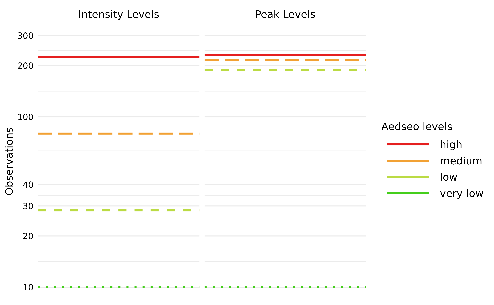
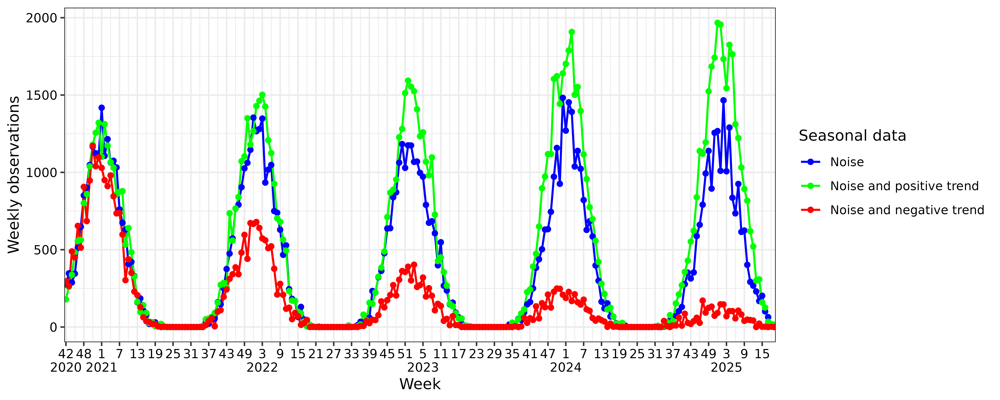

To provide a concise overview of how the
seasonal_burden_levels() algorithm operates, we utilize the
same example data presented in the vignette("aedseo"). The
plot below illustrates the two methods available for estimating burden
levels in the combined_seasonal_output() function:
-
intensity_levels: Intended for within-season classification of observations. -
peak_levels: Intended for comparing the height of peaks between seasons.
The disease-specific threshold is the very low
breakpoint for both methods. Breakpoints are named as the upper bounds
for the burden levels, and are visualised on following plot.

Methodology
The methodology used to define the burden levels of seasonal epidemics is based on observations (cases or incidence) from previous seasons. Historical data from all available seasons is used to establish the levels for the current season. This is done by:
- Using either cases or incidence as observations (default is
cases, but ifincidenceis in thetsdobject it will be used instead). - Using
nhighest (peak) observations from each season. - Selecting only observations if they surpass the disease-specific threshold.
- Weighting the observations such that recent observations have a greater influence than older observations.
- A proper distribution (log-normal, weibull and exponential are
currently implemented) is fitted to the weighted
npeak observations. The selected distribution with the fitted parameters is used to calculate percentiles to be used as breakpoints. - Burden levels can be defined by two methods:
-
peak_levelswhich models the height of the seasonal peaks. Using the log-normal distribution without weights is similar to the default in mem. -
intensity_levelswhich models the within season levels. The highest breakpoint is identical with thepeak_levelsmethod. Intermediate breakpoints are evenly distributed on a logaritmic scale, between thevery lowandhighbreakpoints, to give the same relative difference between the breakpoints.
-
The model is implemented in the seasonal_burden_levels()
function of the aedseo package. In the following sections
we will describe the arguments for the function and how the model is
build.
Peak observations
The n_peak argument defines the number of highest
observations to be included from each season. The default of
n_peak is 6 - corresponding with the
mem defaults of using 30 observations across the latest
five seasons.
Weighting
The decay_factor argument is implemented to give more
weight to recent seasons, as they are often more indicative of current
and future trends. As time progresses, the relevance of older seasons
may decrease due to changes in factors like testing recommendations,
population immunity, virus mutations, or intervention strategies.
Weighting older seasons less reflects this reduced relevance. From
time-series analysis,
is often used as an approximate “effective memory”. Hence, with the
default decay_factor = 0.8 the effective memory is five
seasons. (See mentioned by Hyndman &
Athanasopoulos for an introduction to simple exponential smoothing)
The default decay_factor allows the model to be responsive
to recent changes without being overly sensitive to short-term
fluctuations. The optimal decay_factor can vary depending
on the variability and trends within the data. For datasets where
seasonal patterns are highly stable, a higher decay_factor
(i.e. longer memory) may be appropriate. Conversely, if the data exhibit
dramatic shifts from one season to the next, a lower
decay_factor may improve predictions.
Distribution and optimisation
The family argument is used to select which distribution
the n_peak observations should be fitted to, users can
choose between lnorm, weibull and
exp distributions. The log-normal distribution
theoretically aligns well with the nature of epidemic data, which often
exhibits multiplicative growth patterns. In our optimisation process, we
evaluated the distributions to determine their performance in fitting
Danish non-sentinel cases and hospitalisation data for RSV, SARS-CoV-2
and Influenza (A and B). All three distributions had comparable weighted
likelihood values during optimisation, hence we did not see any
statistical significant difference in their performance.
The model uses the fit_percentiles() function which
employs the stats::optim for estimating the parameters that
maximizes the weighted likelihood. The optim_method
argument can be passed to seasonal_burden_levels(), default
is Nelder-Mead but other methods can be selected, see
?fit_percentiles.
Burden levels
The method argument is used to select one of the two
methods intensity_levels(default) and
peak_levels. Both methods return percentile(s) from the
fitted distribution which are used to define the breakpoins for the
burden levels. Breakpoints are named very low,
low, medium and high and define
the upper bound of the corresponding burden level.
intensity_levelstakes one percentile as argument, representing the highest breakpoint. The default is set at a 95% percentile. The disease-specific threshold determines thevery lowbreakpoint. Thelowandmediumbreakpoints are calculated to give identical relative increases between thevery lowandhighbreakpoints.peak_levelstakes three percentiles as argument, representing thelow,mediumandhighbreakpoints. The default percentiles are 40%, 90%, and 97.5% to align with the parameters used inmem. The disease-specific threshold defines thevery lowbreakpoint.
Applying the seasonal_burden_levels() algorithm
The same data is created with following combinations:
- noise
- noise and positive trend
- noise and negative trend
These combinations are selected as it is realistic for real world data to have noise, and differentiation between trend can occur declining or inclining between seasons. Breakpoints for season 2024/2025 are calculated based on the three previous seasons.
To apply the seasonal_burden_levels() algorithm, data
needs to be transformed into a tsd object. The
disease-specific threshold is determined for all data combinations with
use of the method described in vignette("aedseo"). The
disease-specific threshold should be revised before a new season starts,
especially if the data has a trend.

Use the intensity_levels method
The seasonal_burden_levels() function provides a
tsd_burden_level object, which can be used in the
summary() S3 method. This provides a concise summary of
your comprehensive seasonal burden level analysis, including breakpoints
for the current season.
intensity_levels_n <- seasonal_burden_levels(
tsd = tsd_data_noise,
disease_threshold = 10,
method = "intensity_levels",
conf_levels = 0.975
)
summary(intensity_levels_n)
#> Summary of tsd_burden_levels object
#>
#> Breakpoint estimates:
#> very low : 10.000000
#> low: 53.267535
#> medium: 283.743033
#> high: 1511.429206
#>
#> The season for the burden levels:
#> 2025/2026
#>
#> Model settings:
#> Disease specific threshold: 10
#> Incidence denominator: NA
#> Called using distributional family: lnormUse the peak_levels method
mem uses the n highest observations from
each previous epidemic period to fit the parameters of the distribution,
where n = 30/seasons. The data has four previous seasons,
to align with mem, we use n_peak = 8
peak_levels_n <- seasonal_burden_levels(
tsd = tsd_data_noise,
disease_threshold = 10,
method = "peak_levels",
conf_levels = c(0.4, 0.9, 0.975),
n_peak = 8
)
summary(peak_levels_n)
#> Summary of tsd_burden_levels object
#>
#> Breakpoint estimates:
#> very low : 10.000000
#> low: 1133.397742
#> medium: 1366.530366
#> high: 1484.312479
#>
#> The season for the burden levels:
#> 2025/2026
#>
#> Model settings:
#> Disease specific threshold: 10
#> Incidence denominator: NA
#> Called using distributional family: lnormCompare intensity_levels, peak_levels and mem algorithms
mem is run with default arguments.
# Remove current season such as previous seasons predict for newest season
previous_seasons <- tsd_data_all |>
dplyr::mutate(season = epi_calendar(time)) |>
dplyr::filter(season != "2024/2025") |>
dplyr::select(-season)
# Run mem algorithm
mem_thresholds <- previous_seasons |>
dplyr::group_by(Data) |>
dplyr::group_modify(~ {
mem_data <- .x |>
dplyr::mutate(season = aedseo::epi_calendar(time),
week = lubridate::isoweek(time)) |>
dplyr::select(-time) |>
tidyr::pivot_wider(names_from = season, values_from = cases) |>
dplyr::select(-week)
# Run mem
mem_result <- mem::memmodel(mem_data)
# Extract thresholds
mem_thresholds <- tibble::tibble(
`epidemic threshold \n (mem)` = mem_result$epidemic.thresholds[1],
`medium` = mem_result$intensity.thresholds[1],
`high` = mem_result$intensity.thresholds[2],
`very high` = mem_result$intensity.thresholds[3]
)
})aedseo and mem levels

In the plots:
- Observations below 3 are filtered out to improve visualization.
- y scale is log transformed.
Upon examining all methods and data combinations, it becomes clear
that the intensity_levels approach establishes levels
covering the entire set of observations from previous seasons. In
contrast, the peak_levels and mem methods
define levels solely based on the highest observations within each
season, and are thus only relevant for comparing the height of peaks
between seasons.
The highest observations for the 2024/2025 season for each data set are:
| Data | Observation |
|---|---|
| Noise | 1466 |
| Noise and positive trend | 1967 |
| Noise and negative trend | 171 |
In relation to these highest observations and upon further examination, we observe the following:
Plots with Noise and Noise with Positive Trend:
- Both
peak_levelsandmemestimate very high breakpoints. This occurs because observations remain consistently elevated across all three seasons, causing these methods to overlook the remaining observations.
Data with Noise and Positive Trend:
- All three methods exhibit higher breakpoints, indicating that they successfully capture the exponentially increasing trend between seasons.
Data with Noise and Negative Trend:
As observations exponentially decrease between seasons (with the highest observation this season being 171), we expect the breakpoints to be the lowest of these examples. This expectation is met across all three methods. However, the weighting of seasons in
intensity_levelsandpeak_levelsleads to older seasons having less impact on the breakpoints, as we progress forward in time. On the other hand,memincludes all high observations from the previous 10 seasons without diminishing the importance of older seasons, which results in sustained very high breakpoints.Notably, in the
memmethod, the epidemic threshold is positioned slightly above themediumburden level. This means that the epidemic period begins only when observations reach the height of the seasonal peaks observed in previous seasons.
In conclusion, the peak_levels and mem
methods allows us to compare the height of peaks between seasons,
whereas the intensity_levels method supports continuous
monitoring of observations in the current season.